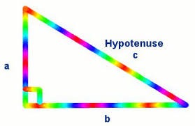

We have a right angled triangle with hypotenuse length c, as shown:
Recall Pythagoras' Theorem, which tells us the length of the longest side (the hypotenuse):
`c=√(a^2+b^2)`
We use this to find the distance between any two points (x1, y1) and (x2, y2) on the cartesian (x-y) plane:
The point B (x2, y1) is at the right angle. We can see that:
Using Pythagoras' Theorem we can develop a formula for the distance d.
The distance between (x1, y1) and (x2, y2) is given by:
`d=√((x_2-x_1)^2+(y_2-y_1)^2`
Note: Don't worry about which point you choose for (x1, y1) (it can be the first or second point given), because the answer works out the same.
You can explore the concept of distance formula in the following JSXGraph (it's not a fixed image).
Drag either point A or point B to investigate how the distance formula works.